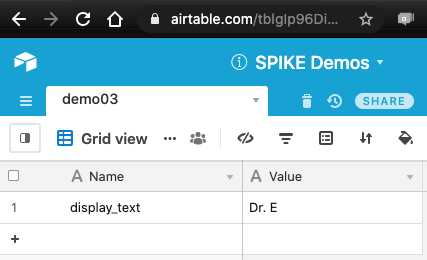
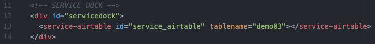
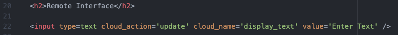
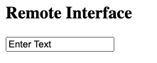
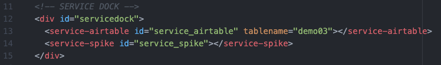
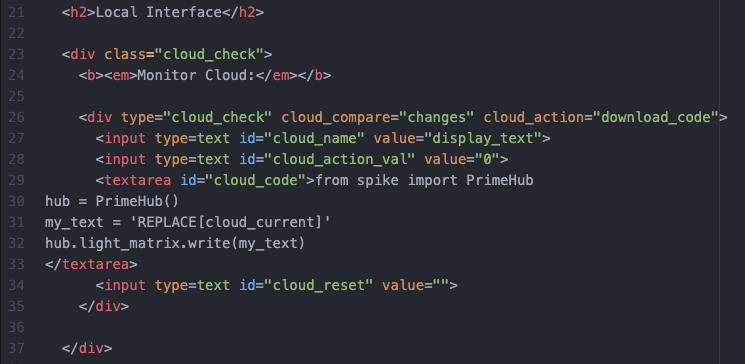
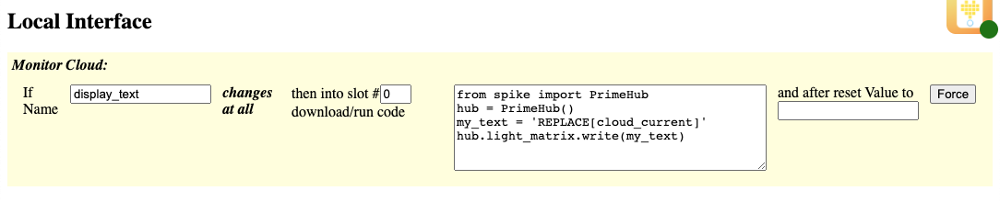

This demo shows how to use a textbox input for user to supply content.
Be sure to view the overall Documentation for configuring the cloud storage (API key, Base ID, etc) and for more information on how the entire system works.
The "Name" column has an entry "display_text" that will hold the updated text from the Text Box. The "Value" can be any string to be displayed.

Service Dock
The remote page has the Airtable Service Dock element. Make sure to update the tablename attribute to match your table name.
Remote Interface
This text box (
<input type="text" ...>) will update the "display_text" to be whatever the current value of the text box is.This is how the text box will look on the Remote Page:

Service Dock
The local page has both the Airtable Service Dock element (make sure to update the tablename attribute to match your table name). There is also a single SPIKE Prime Service Dock element.
Local Interface
The local interface is set up to monitor the "display_text" value, and will react if it changes at all (to any new value). When it changes, it will then download and run the code into Slot #0 (the "cloud_action_val" value). Note that inside the MicroPython code there is variable (
my_text) that is set to a "REPLACE[cloud_current]" parameter: before downloading the code, this will be replaced with whatever value is currently in the "display_text" variable. Note that because this is a string, there are extra "single-quotes" around the value. Then this variable is passed to the light_matrix.write function.After the code is run, the cloud Value is set to nothing (empty string: "") by the cloud_reset parameter.
This is how this element will look on the Local Page:
